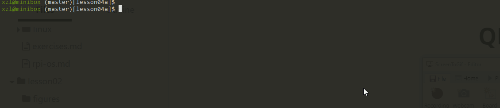
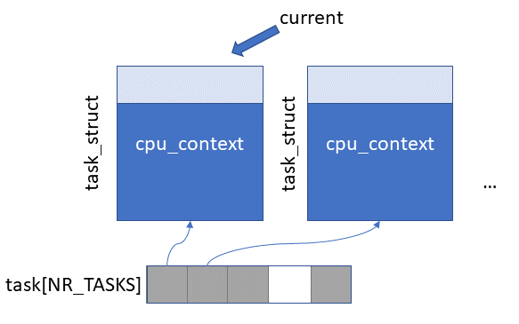
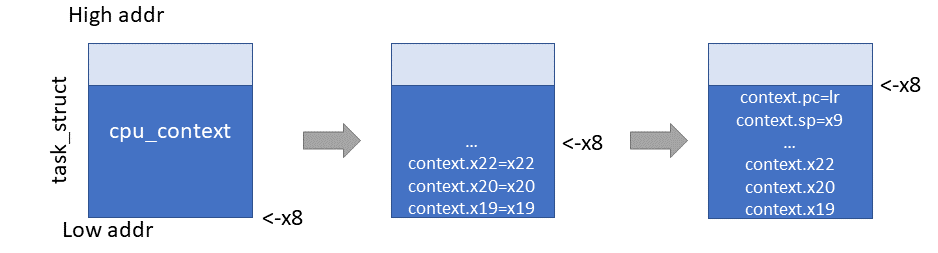
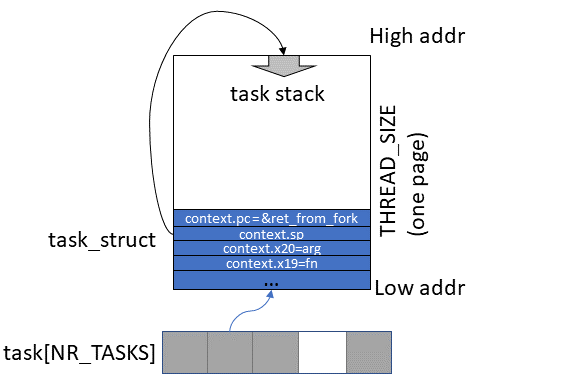

4a: Cooperative Multitasking
Results with UART output:

Source code location: p1-kernel/src/exp4a
Overview
From this experiment onward, our kernel starts to schedule multiple tasks. This makes it a true "kernel" instead of a baremetal program.
This experiment focuses on scheduling and task switch. Tasks must voluntarily yield to each other. We defer interrupt handling to upcoming experiment. We will intentionally leave out interrupts, i.e. timer interrupts are left OFF.
Roadmap. We will implement:
- The
task_structdata structure - Task creation by manipulating
task_struct, registers, and stack - Minimalist memory allocation
- Minimalist task scheduling
Processes or tasks?. As we do not have virtual memory yet, we use the term "tasks" instead of "processes". Note: in Linux both thread and processes are just different types of tasks; the difference is in how they share address spaces.
Key data structures
 Figure above: an array of pointers to task_structs of tasks
task_struct
A struct describing a task. Its name comes from the Linux kernel (again). The code is as follows (sched.h).
struct cpu_context {
unsigned long x19;
unsigned long x20;
unsigned long x21;
unsigned long x22;
unsigned long x23;
unsigned long x24;
unsigned long x25;
unsigned long x26;
unsigned long x27;
unsigned long x28;
unsigned long fp;
unsigned long sp;
unsigned long pc;
};
struct task_struct {
struct cpu_context cpu_context;
long state;
long counter;
long priority;
long preempt_count;
};
This struct has the following members:
cpu_contextThis is a struct that contains values of all registers that might be different between the tasks.- Why don't we save all registers, but only
x19 - x30andsp? (fpisx29andpcisx30). A short answer: to cater to the Armv8 calling convention.- Because task switch happens only when a task calls cpu_switch_to function. From the point of view of the task that is being scheduled out (i.e. the "switched-from" task), it just calls
cpu_switch_tofunction and it returns after some (potentially long) time. - The "switched from" task is unaware of that another task (i.e. the "switched-to" task) happens to runs during this period.
- Accordingly to ARM calling conventions registers
x0 - x18can be overwritten by the callee (i.e.cpu_switch_to()in our case). Hence, the kernel doesn't have to save the contents ofx0 - x18for the caller (the "switched-from" task).
- Because task switch happens only when a task calls cpu_switch_to function. From the point of view of the task that is being scheduled out (i.e. the "switched-from" task), it just calls
stateThe state of the currently running task (NOTPSTATE-- an orthogonal concept). For a task just doing CPU work but not IO, the task state will always be TASK_RUNNING. For now, this is the only state supported by our kernel.- Later we add a few additional states. For example, a task waiting for an interrupt should be in a different state, because it doesn't make sense to schedule the task when it is not ready to run yet.
counteris used to determine how long the current task has been running.counterdecreases by 1 each timer tick. When it reaches 0, the kernel will attempt to schedule another task. This supports our simple scheduling algorithm.priorityWhen the kernel schedules a new task, the kernel copies the task'spriorityvalue tocounter. In this way, the kernel can regulate the amount of processor time the task gets relative to other tasks.preempt_countA flag. A non-zero value means that the current task is executing in a critical code region that cannot be interrupted, e.g. by switching to another task. Any timer tick should be ignored and not triggering rescheduling.
After the kernel startup, there is only one task running: the one that runs kernel_main(). It is called "init task". Before the scheduler is enabled, we must fill task_struct of the init task. This is done in INIT_TASK.
All task_structs are stored in task (sched.c) array. This array has only 64 slots - that is the maximum number of simultaneous tasks the kernel can have. It won't suit a production OS, but it is ok for our goals.
An important global variable is current (sched.c) that always points to task_struct of currently executing task. Both current and task array are initially set to hold a pointer to the init task. There is also a global variable nr_task - it contains the number of currently running tasks in the system.
Task switch
Preparing task_structs (kernel.c)
void kernel_main(void)
{
uart_init();
init_printf(0, putc);
irq_vector_init();
int res = copy_process((unsigned long)&process, (unsigned long)"12345");
if (res != 0) {
printf("error while starting process 1");
return;
}
res = copy_process((unsigned long)&process, (unsigned long)"abcde");
if (res != 0) {
printf("error while starting process 2");
return;
}
while (1){
schedule();
}
}
-
A new function
copy_processis introduced.copy_processtakes 2 arguments: a function to execute in a new thread and an argument passed to this function.copy_processallocates a newtask_structand makes it available for the scheduler. -
Another new function
schedule. This is the core scheduler function: it checks whether there is a new task that needs to preempt the current one. In cooperative scheduling, a task voluntarily callsscheduleif it doesn't have any work to do at the moment.
For preemptive multitasking,
scheduleis also called from the timer interrupt handler.Try your self with QEMU: set a breakpoint at copy_process & launch the kernel. Examine task_struct with
print *p. Examine the value of cpu_context.[pc|sp|fn|arg].
We are calling copy_process 2 times, each time passing a pointer to the process function as the first argument.
process function is very simple.
void process(char *array)
{
while (1){
for (int i = 0; i < 5; i++){
uart_send(array[i]);
delay(100000);
schedule();
}
}
}
It just keeps printing characters from the array, which is passed as an argument. Task 1 is created with the argument "12345" and task 2 is with the argument "abcde". After printing out a string, a task yields to others by calling schedule(). If our scheduler implementation is correct, both threads will take turns to print strings.
Switching tasks (sched.c & sched.S)
This is where the magic happens. The code looks like this.
void switch_to(struct task_struct * next)
{
if (current == next)
return;
struct task_struct * prev = current;
current = next;
cpu_switch_to(prev, next);
}
If the "next" process is not the same as the "current", the kernel updates current. The cpu_switch_to function is where the real context switch happens. To manipulates registers, it is in assembly.
.globl cpu_switch_to
cpu_switch_to:
mov x10, #THREAD_CPU_CONTEXT
add x8, x0, x10
mov x9, sp
stp x19, x20, [x8], #16 // store callee-saved registers
stp x21, x22, [x8], #16
stp x23, x24, [x8], #16
stp x25, x26, [x8], #16
stp x27, x28, [x8], #16
stp x29, x9, [x8], #16
str x30, [x8]
add x8, x1, x10
ldp x19, x20, [x8], #16 // restore callee-saved registers
ldp x21, x22, [x8], #16
ldp x23, x24, [x8], #16
ldp x25, x26, [x8], #16
ldp x27, x28, [x8], #16
ldp x29, x9, [x8], #16
ldr x30, [x8]
mov sp, x9
ret
Let's examine it line by line.
mov x10, #THREAD_CPU_CONTEXT
add x8, x0, x10
THREAD_CPU_CONTEXT constant contains offset of the cpu_context structure in the task_struct (the offset is 0 in the current implementation). x0 contains a pointer to the first argument, which is the current task_struct (i.e. the "switch-from" task). After the copied 2 lines are executed, x8 will contain a pointer to the current cpu_context.
mov x9, sp
stp x19, x20, [x8], #16 // store callee-saved registers
stp x21, x22, [x8], #16
stp x23, x24, [x8], #16
stp x25, x26, [x8], #16
stp x27, x28, [x8], #16
stp x29, x9, [x8], #16
str x30, [x8]

The figure above: During context switch, registers are being saved to task_struct.context
Next all callee-saved registers are stored in the order, in which they are defined in cpu_context structure. The current stack pointer is saved as cpu_context.sp and x29 is saved as cpu_context.fp (frame pointer).
Note: x30, the link register containing function return address, is stored as cpu_context.pc. Why?
Now we calculate the address of the next task's cpu_context:
add x8, x1, x10
This a cute hack. x10 contains THREAD_CPU_CONTEXT , the offset of the cpu_context structure inside task_struct. x1 is a pointer to the next task_struct, so x8 will contain a pointer to the next cpu_context.
Now, restore the CPU context of "switch_to" task from memory to CPU regs. A mirror procedure.
ldp x19, x20, [x8], #16 // restore callee-saved registers
ldp x21, x22, [x8], #16
ldp x23, x24, [x8], #16
ldp x25, x26, [x8], #16
ldp x27, x28, [x8], #16
ldp x29, x9, [x8], #16
ldr x30, [x8]
mov sp, x9
ret
The ret instruction will jump to the location pointed to by the link register (x30). If we are switching to a task for the first time, this will be the beginning of the ret_from_fork function. More on that below. In all other cases this will be the location previously saved in the cpu_context.pc by the cpu_switch_to function. Think: which instruction does it point to?
Launching a new task
New task creation is implemented in the copy_process function.
Keep in mind: after copy_process finishes execution, no context switch happens yet. The function only prepares new task_struct and adds it to the task array — this task will be executed only after schedule function is called.
int copy_process(unsigned long fn, unsigned long arg)
{
struct task_struct *p;
p = (struct task_struct *) get_free_page();
if (!p)
return 1;
p->priority = current->priority;
p->state = TASK_RUNNING;
p->counter = p->priority;
p->cpu_context.x19 = fn;
p->cpu_context.x20 = arg;
p->cpu_context.pc = (unsigned long)ret_from_fork;
p->cpu_context.sp = (unsigned long)p + THREAD_SIZE;
int pid = nr_tasks++;
task[pid] = p;
return 0;
}
We examine it in details.
struct task_struct *p;
The function starts with allocating a pointer for the new task. As interrupts are off, the kernel will not be interrupted in the middle of the copy_process function.
p = (struct task_struct *) get_free_page();
if (!p)
return 1;
Next, a new page is allocated. At the bottom of this page, we are putting the task_struct for the newly created task. The rest of this page will be used as the task stack. A few lines below, context.sp is set as p + THREAD_SIZE. THREAD_SIZE is defined as 4KB. It is the total amount of kernel memory for a task. The name, again, is following the Linux kernel convention.
|  |
|---|
| Figure above: a task's task_struct in relative to its stack space |
p->priority = current->priority;
p->state = TASK_RUNNING;
p->counter = p->priority;
After the task_struct is allocated, we can initialize its properties. Priority and initial counters are set based on the current task priority.
p->cpu_context.x19 = fn;
p->cpu_context.x20 = arg;
p->cpu_context.pc = (unsigned long)ret_from_fork;
p->cpu_context.sp = (unsigned long)p + THREAD_SIZE;
This is the most important part of the function. Here cpu_context is initialized. The stack pointer is set to the top of the newly allocated memory page (see the figure above). pc is set to the ret_from_fork function. Details below.
ret_from_fork (entry.S)
This is the first piece of code executed by a newly created process. A new process P executes ret_from_fork after it is switched to for the first time. That is right after the scheduler picks P for the first time and restores P's CPU context from task_struct to CPU registers. Throughout its lifetime, P only executes ret_from_fork once.
About naming: despite the name "fork", we are not doing fork() as in Linux/Unix. We are simply copying a
task_structwhile fork() does far more things like duplicating process address spaces. The naming follows the Linux kernel convention; and we will evolve ourret_from_forkin subsequent experiments.
.globl ret_from_fork
ret_from_fork:
bl schedule_tail // will talk about this later
mov x0, x20
blr x19 //should never return
What are the initial values of x19 and x20? See code copy_process above, which saves fn (the process's main function) and arg (the argument passed to the process) totask_struct.x19 and x20. When switching to P, the kernel restores fn and arg from task_struct to x19 and x20. And here we are: ret_from_fork calls the function stored in x19 register with the argument stored in x20.
:wrench:Try your self with QEMU+GDB: set a breakpoint at ret_from_fork, launch the kernel, and single step into the new process function.
Memory allocation
Each task in the system should have its dedicated stack. That's why when creating a new task we must have a way to allocate memory. For now, our memory allocator is extremely primitive. (The implementation can be found in mm.c file)
static unsigned short mem_map [ PAGING_PAGES ] = {0,};
unsigned long get_free_page()
{
for (int i = 0; i < PAGING_PAGES; i++){
if (mem_map[i] == 0){
mem_map[i] = 1;
return LOW_MEMORY + i*PAGE_SIZE;
}
}
return 0;
}
void free_page(unsigned long p){
mem_map[(p - LOW_MEMORY) / PAGE_SIZE] = 0;
}
:wrench: Try it yourself with QEMU:
ptype mem_mapthenprint (short[10])*mem_map.
The allocator can work only with memory pages (each page is 4 KB in size). There is an array called mem_map that for each page in the system holds its status: whether it is allocated or free. Whenever we need to allocate a new page, we just loop through this array and return the first free page. This implementation is based on 2 assumptions:
- We know the total amount of memory in the system. It is
1 GB - 1 MB(the last megabyte of memory is reserved for device registers.). This value is stored in the HIGH_MEMORY constant. - First 4 MB of memory are reserved for the kernel image and init task stack. This value is stored in the LOW_MEMORY constant. All memory allocations start right after this point.
Note: even with QEMU our kernel must start from 0x80000 (512KB), the above assumptions are good as there's still plenty room in 512KB -- LOW_MEMORY for our tiny kernel.
The scheduler
Finally, we are ready to look at the scheduler algorithm. We almost precisely copied this algorithm from the first release of the Linux kernel.
void _schedule(void)
{
int next,c;
struct task_struct * p;
while (1) {
c = -1;
next = 0;
// try to pick a task
for (int i = 0; i < NR_TASKS; i++){
p = task[i];
if (p && p->state == TASK_RUNNING && p->counter > c) {
c = p->counter;
next = i;
}
}
if (c) {
break;
}
// update counters
for (int i = 0; i < NR_TASKS; i++) {
p = task[i];
if (p) {
p->counter = (p->counter >> 1) + p->priority;
}
}
}
switch_to(task[next]);
}
The simple algorithm works like the following:
-
The first
forloop iterates over all tasks and tries to find a task inTASK_RUNNINGstate with the maximum counter. If such a task is found, we immediately break from thewhileloop and switch to this task. -
If no such task is found, this is either because i) no task is in
TASK_RUNNINGstate or ii) all such tasks have 0 counters. In a real OS, i) might happen, for example, when all tasks are waiting for an interrupt. In our current tiny kernel, all tasks are always inTASK_RUNNING(Why?) -
The scheduler moves to the 2nd
forloop to "recharge" counters. It bumps counters for all tasks once. The increment depends on a task's priority. Note: a task counter can never get larger than2 * priority. -
With updated counters, the scheduler goes back to the 1st
forloop to pick a task.
We will augment the scheduling algorithm for preemptive multitasking later.
Conclusion
We have seen important nuts & bolts of multitasking. The subsequent experiment will enable task preemption. We will show a detailed workflow of context switch there.
One more thing ...
There's support for a graphical console. Works for both QEMU and Rpi3. Display required. See instructions.